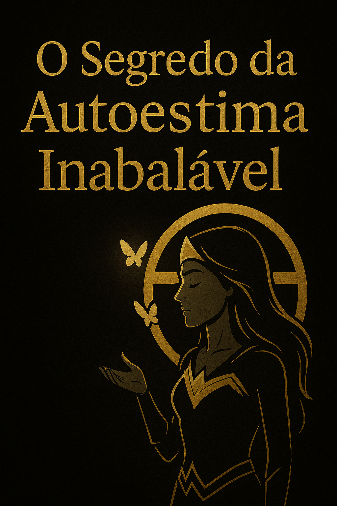

Você já sentiu o frio na espinha ao perceber que, por mais que tente, a vida parece escorrer entre os dedos? Aquela dor silenciosa de não se sentir suficiente, de adiar seus sonhos, de viver uma vida que não é a sua? Essa sensação de vazio e autoanulação tem um padrão oculto, uma raiz profunda que a neurociência já desvendou. E quando você descobrir, sua vida nunca mais será a mesma.
Você já sentiu o Frio na Espinha, o Gosto Amargo da Autoanulação?
O frio na espinha quando percebe que está se encolhendo, perdendo sua voz em cada conversa, como se sua existência fosse um incômodo? O cheiro de oportunidades perdidas?
O suor frio quando a oportunidade bate à porta e o medo de não ser bom o bastante paralisa você, o gosto amargo da desistência pairando na boca?
O peso insuportável de adiar seus sonhos mais uma vez, sentir as culpas passadas te arrastando para um ciclo interminável de autoanulação, como uma âncora fria no peito?
A exaustão mental de lutar contra uma voz interna que te julga sem piedade, minando sua energia, transformando seus pensamentos em um campo de batalha constante e silencioso?
A dor silenciosa de se sentir desconectado, de não se amar verdadeiramente, de buscar a validação externa porque o vazio interno parece grande demais, frio como uma madrugada?
Esses não são apenas sentimentos; são os ecos reais de uma baixa autoestima que rouba seu brilho, sua energia, seus sonhos e seu direito de viver plenamente. E o pior: seu cérebro está programado para mantê-lo nesse ciclo doloroso, preferindo o conhecido e sofrido ao desconhecido e libertador. Mas eu tenho uma **notícia devastadora** para o seu medo e uma **solução urgente** para a sua alma.
Imagine Acordar Amanhã com a Liberdade de Viver Com Sua Autoestima Inabalável, SEM Medo e SEM Vazio...
Imagine acordar amanhã com um plano tão claro e definitivo que você sabe exatamente o que fazer para silenciar a voz interna que te sabota, para resgatar sua essência mais profunda e para construir um amor-próprio que o sustenta mesmo nos dias mais difíceis, como um farol em meio à tempestade. Sem dúvidas. Sem desperdício de energia. Apenas progresso diário, leveza na alma e a certeza de que você é digno.
Imagine o seu cérebro reprogramado cientificamente para a autocompaixão e o sucesso, liberando dopamina e serotonina a cada pequeno ato de autocuidado, sentindo o calor do prazer em cada escolha por você. Onde o medo de ser julgado desaparece completamente e você sente a coragem inabalável de ser quem você realmente é, sem máscaras, sem culpas, sem o peso das expectativas alheias.
Imagine amar e aceitar seu corpo como um templo sagrado, não como um campo de batalha. Onde o espelho reflete não imperfeições, mas a beleza da sua jornada, e cada toque em seu corpo é um ato de carinho, aceitação e profunda gratidão. Um corpo que é seu aliado, não seu inimigo.
Imagine construir um relacionamento inabalável consigo mesmo, onde a validação e o amor vêm de dentro, e as críticas externas perdem completamente o poder de te atingir. Uma vida onde você não apenas existe, mas floresce em sua plenitude, irradiando sua luz para o mundo, atraindo o que realmente importa.
Tudo isso é real e está ao seu alcance com o método AUTOESTIMA INABALÁVEL de Helder Benni Alencar. Um guia premium, validado pela ciência e pela experiência, que te levará, passo a passo, do vazio à plenitude, da dúvida à certeza inabalável do seu valor.
ATENÇÃO: ESTE É SEU ÚLTIMO AVISO. SEJA HONESTO COM VOCÊ.
Esta oferta exclusiva para o e-book "Autoestima Inabalável" é para os PRIMEIROS E POUCOS NOVOS LEITORES que decidirem mudar de vida HOJE. Não haverá prorrogação. Não haverá segundas chances.
Quando as vagas limitadas forem preenchidas, este preço e bônus SIMPLESMENTE NÃO ESTARÃO MAIS DISPONÍVEIS. Você terá que esperar 6 longos meses pela próxima oportunidade, e com um valor que será 3x maior. A dor de perder é real.
E o seu vizinho, aquele colega de trabalho que te incomoda, ou até mesmo aquela pessoa que hoje você compara... ele(a) já pode estar garantindo o lugar dele(a) neste exato momento. Você vai deixá-lo(a) um passo à frente de novo? A escolha é sua. A dor da inação é maior que a dor da mudança.
Sua Decisão É AGORA. Aja ou Aceite a Permanência da Dor.
Clique no botão abaixo antes que seu cérebro invente mais uma desculpa barata para te manter na zona de conforto dolorosa. Amanhã será tarde demais. Amanhã, a pessoa plena e inabalável que você poderia ser já estará um passo à frente da sua versão de hoje, presa na inércia. HOJE é o seu dia. Hoje é o dia de resgatar sua autoestima, seu valor, sua vida e sua liberdade. **Esteja entre aqueles que AGEM.**
GARANTA SUA AUTOESTIMA INABALÁVEL AGORAOferta por tempo e vagas limitadas. Não perca a sua transformação.